8 Chapter 8: Tree-based Classification and Regression
Packages required (plus any dependencies)
DAAG latticeExtra plot rpart rpart.plot MASS ggplot2 car randomForest
Additionally, knitr and Hmisc are required in order to process the Rmd source file.
Hmisc::knitrSet(basename="treebased", lang='markdown', fig.path="figs/g", w=7, h=7)
oldopt <- options(digits=4, formatR.arrow=FALSE, width=70, scipen=999)
library(knitr)
## knitr::render_listings()
opts_chunk[['set']](cache.path='cache-', out.width="80%", fig.align="center",
fig.show='hold', size="small", ps=10, strip.white = TRUE,
comment=NA, width=70, tidy.opts = list(replace.assign=FALSE))suppressPackageStartupMessages(library(latticeExtra))When are tree-based methods appropriate?
Section 8.1: Tree-based methods — uses and basic notions
Examples that will be used to demonstrate the methodology
Subsection 8.1.1: Detecting email spam~– an initial look
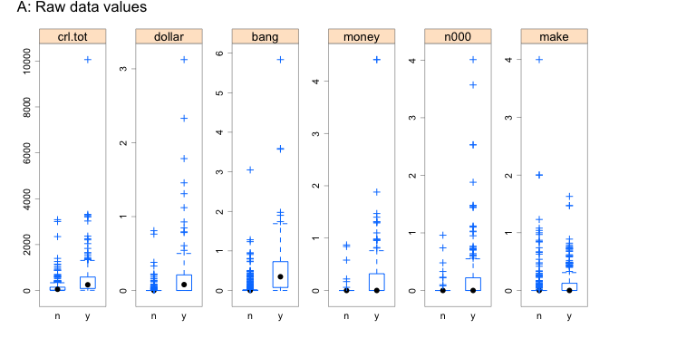
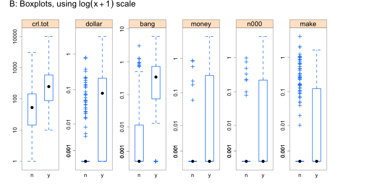
nam <- c("crl.tot", "dollar", "bang", "money", "n000", "make")
nr <- sample(1:dim(DAAG::spam7)[1],500)
yesno<-DAAG::spam7$yesno[nr]
spam7a <- DAAG::spam7[nr,c(nam,"yesno")]
formab <- as.formula(paste(paste(nam, collapse='+'), '~ yesno'))
spamtheme <- DAAG::DAAGtheme(color = TRUE, pch=3)
lattice::bwplot(formab, data=spam7a, outer=T, horizontal=F, layout=c(7,1),
scales=list(relation='free'), ylab="", par.settings=spamtheme,
between=list(x=0.5),
main=list("A: Raw data values", y=1.0, font=1, cex=1.25))
spam7b <- cbind(log(spam7a[,-7]+0.001), yesno=spam7a[,7])
yval <-c(0.001, 0.001,0.01,0.1,1,10,100,1000,10000)
lattice::bwplot(formab, data=spam7b, outer=T, horizontal=F, layout=c(7,1),
scales=list(relation='free',
y=list(at=log(yval+0.001), labels=yval, rot=90)),
ylab="", par.settings=spamtheme, between=list(x=0.5),
main=list(expression("B: Boxplots, using "*log(x+001)*" scale"),
y=1.0, font=1, cex=1.25))## Obtain 500-row sample; repeat the first plot (of crl.tot)
spam.sample <- spam7[sample(seq(1,4601), 500, replace=FALSE), ]
boxplot(split(spam.sample$crl.tot, spam.sample$yesno))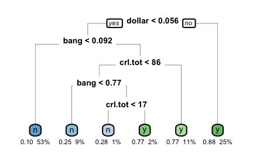
suppressMessages(library(rpart))
set.seed(31) ## Reproduce tree shown in text
spam.rpart <- rpart(formula = yesno ~ crl.tot + dollar + bang + money + n000 +
make, method="class", model=TRUE, data=DAAG::spam7)
rpart.plot::rpart.plot(spam.rpart, type=0, under=TRUE, branch.lwd=0.4,
nn.lwd=0.4, box.palette="auto", tweak=1.25)printcp(spam.rpart, digits=3)
Classification tree:
rpart(formula = yesno ~ crl.tot + dollar + bang + money + n000 +
make, data = DAAG::spam7, method = "class", model = TRUE)
Variables actually used in tree construction:
[1] bang crl.tot dollar
Root node error: 1813/4601 = 0.394
n= 4601
CP nsplit rel error xerror xstd
1 0.4766 0 1.000 1.000 0.0183
2 0.0756 1 0.523 0.547 0.0154
3 0.0116 3 0.372 0.388 0.0135
4 0.0105 4 0.361 0.384 0.0134
5 0.0100 5 0.350 0.382 0.0134Subsection 8.1.2: Choosing the number of splits
Section 8.2: Splitting criteria, with illustrative examples
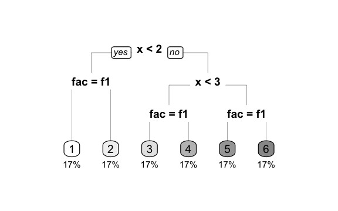
tree.df <- data.frame(fac = factor(rep(c('f1','f2'), 3)),
x = rep(1:3, rep(2, 3)), Node = 1:6)
u.tree <- rpart(Node ~ fac + x, data = tree.df,
control = list(minsplit = 2, minbucket = 1, cp = 1e-009))
rpart.plot::rpart.plot(u.tree, type=0, under=TRUE, branch.lwd=0.25,
nn.lwd=0.25, box.palette="Grays", tweak=1.6)Choosing the split~– regression trees
Subsection 8.2.1: Within and between sums of squares
Subsection 8.2.2: Choosing the split~– classification trees
Subsection 8.2.3: Tree-based regression versus loess regression smoothing
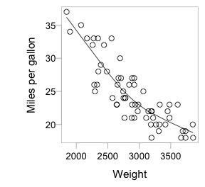
u.lo <- loess(Mileage~Weight, data = car.test.frame, span = 2/3)
plot(Mileage~Weight, data=car.test.frame, xlab = "Weight",
ylab = "Miles per gallon", sub = "", fg="gray")
xy <- with(car.test.frame, loess.smooth(Weight, Mileage))
ord<-order(xy$x)
lines(xy$x[ord],xy$y[ord])## loess fit to Mileage vs Weight: data frame car.test.frame (rpart)
with(rpart::car.test.frame, scatter.smooth(Mileage ~ Weight))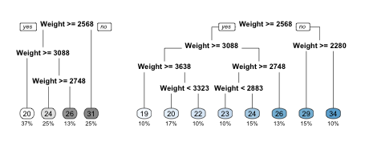
par(fig=c(0, 0.32, 0,1))
set.seed(37)
car.tree <- rpart(Mileage ~ Weight, data = car.test.frame)
rpart.plot::rpart.plot(car.tree, type=0, under=TRUE,
box.palette="Grays", tweak=1.05)
par(fig=c(0.3,1, 0,1), new=TRUE)
set.seed(37)
car2.tree <- rpart(Mileage~Weight, data=car.test.frame, control =
list(minsplit = 10, minbucket = 5, cp = 0.0001))
rpart.plot::rpart.plot(car2.tree, type=0, under=TRUE,
box.palette="auto", tweak=1.05)## Panel A: Split criteria were left a their defaults
car.tree <- rpart(Mileage ~ Weight, data = car.test.frame)
rpart.plot::rpart.plot(car.tree, type=0, under=TRUE)
## Panel B: Finer grained splits
car2.tree <- rpart(Mileage ~ Weight, data=car.test.frame, method="anova",
control = list(minsplit = 10, minbucket = 5, cp = 0.0001))
## See `?rpart::rpart.control` for details of control options.dat <- data.frame(Weight=seq(from=min(car.test.frame$Weight),
to=max(car.test.frame$Weight)))
pred <- predict(car.tree, newdata=dat)
pred2 <- predict(car2.tree, newdata=dat)
lwr <- dat$Weight[c(1,diff(pred)) != 0]
upr <- dat$Weight[c(diff(pred),1) != 0]
xy2 <- with(car.test.frame, loess.smooth(Weight, Mileage, evaluation=2011))
lwrLO <- xy2$y[c(1,diff(pred)) != 0]
uprLO <- xy2$y[c(diff(pred),1) != 0]
round(rbind(lwr,upr,lwrLO,uprLO,
pred[c(diff(pred),1)!=0],pred2[c(diff(pred),1)!=0]),1) 723 903 1243 2011
lwr 1845.0 2568.0 2748.0 3088.0
upr 2567.0 2747.0 3087.0 3855.0
lwrLO 36.2 27.1 25.1 22.3
uprLO 27.1 25.1 22.3 18.8
30.9 25.6 23.8 20.4
28.9 25.6 24.1 18.7Subsection 8.2.4: Predictive accuracy, and the cost-complexity tradeoff
Subsection 8.2.5: Cross-validation
Subsection 8.2.6: The cost-complexity parameter
vignette("longintro", package="rpart")Subsection 8.2.7: Prediction error versus tree size
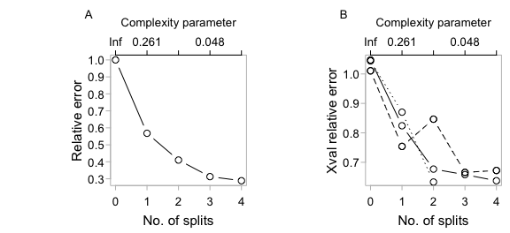
Section 8.3: The practicalities of tree construction – two examples
Subsection 8.3.1: Data for female heart attack patients
mifem <- DAAG::mifem
summary(mifem) # data frame mifem (DAAG) outcome age yronset premi smstat diabetes
live:974 Min. :35.0 Min. :85.0 y :311 c :390 y :248
dead:321 1st Qu.:57.0 1st Qu.:87.0 n :928 x :280 n :978
Median :63.0 Median :89.0 nk: 56 n :522 nk: 69
Mean :60.9 Mean :88.8 nk:103
3rd Qu.:66.0 3rd Qu.:91.0
Max. :69.0 Max. :93.0
highbp hichol angina stroke
y :813 y :452 y :472 y : 153
n :406 n :655 n :724 n :1063
nk: 76 nk:188 nk: 99 nk: 79
set.seed(29) # Make results reproducible
mifem.rpart <- rpart(outcome ~ ., method="class", data = mifem, cp = 0.0025)## Tabular equivalent of Panel A from `plotcp(mifem.rpart)`
printcp(mifem.rpart, digits=3)
Classification tree:
rpart(formula = outcome ~ ., data = mifem, method = "class",
cp = 0.0025)
Variables actually used in tree construction:
[1] age angina diabetes hichol premi smstat stroke
[8] yronset
Root node error: 321/1295 = 0.248
n= 1295
CP nsplit rel error xerror xstd
1 0.20249 0 1.000 1.000 0.0484
2 0.00561 1 0.798 0.829 0.0453
3 0.00467 13 0.717 0.875 0.0462
4 0.00312 17 0.698 0.860 0.0459
5 0.00250 18 0.695 0.863 0.0460cat(c(". . .", capture.output(printcp(mifem.rpart, digits=3))[-(1:9)]),
sep="\n"). . .
Root node error: 321/1295 = 0.248
n= 1295
CP nsplit rel error xerror xstd
1 0.20249 0 1.000 1.000 0.0484
2 0.00561 1 0.798 0.829 0.0453
3 0.00467 13 0.717 0.875 0.0462
4 0.00312 17 0.698 0.860 0.0459
5 0.00250 18 0.695 0.863 0.0460
plotcp(mifem.rpart, fg="gray", tcl=-0.25)
mifemb.rpart <- prune(mifem.rpart, cp=0.01) ## Prune tree back to 2 leaves
rpart.plot::rpart.plot(mifemb.rpart, under=TRUE, type=4,
box.palette=0, tweak=1.0)Subsection 8.3.2: The one-standard-deviation rule
Subsection 8.3.3: Printed Information on Each Split
print(mifemb.rpart)n= 1295
node), split, n, loss, yval, (yprob)
* denotes terminal node
1) root 1295 321 live (0.7521 0.2479)
2) angina=y,n 1196 239 live (0.8002 0.1998) *
3) angina=nk 99 17 dead (0.1717 0.8283) *set.seed(59)
spam7a.rpart <- rpart(formula = yesno ~ crl.tot + dollar + bang +
money + n000 + make, method="class", cp = 0.002,
model=TRUE, data = DAAG::spam7)printcp(spam7a.rpart, digits=3)
Classification tree:
rpart(formula = yesno ~ crl.tot + dollar + bang + money + n000 +
make, data = DAAG::spam7, method = "class", model = TRUE,
cp = 0.002)
Variables actually used in tree construction:
[1] bang crl.tot dollar money n000
Root node error: 1813/4601 = 0.394
n= 4601
CP nsplit rel error xerror xstd
1 0.47656 0 1.000 1.000 0.0183
2 0.07557 1 0.523 0.550 0.0154
3 0.01158 3 0.372 0.390 0.0135
4 0.01048 4 0.361 0.386 0.0134
5 0.00634 5 0.350 0.374 0.0133
6 0.00552 10 0.317 0.360 0.0130
7 0.00441 11 0.311 0.357 0.0130
8 0.00386 12 0.307 0.352 0.0129
9 0.00276 16 0.291 0.339 0.0127
10 0.00221 17 0.288 0.339 0.0127
11 0.00200 18 0.286 0.336 0.0127cpdf <- signif(as.data.frame(spam7a.rpart$cptable),3)
minRow <- which.min(cpdf[,"xerror"])
upr <- sum(cpdf[minRow, c("xerror","xstd")])
takeRow <- min((1:minRow)[cpdf[1:minRow,"xerror"]<upr])
newNsplit <- cpdf[takeRow, 'nsplit']
cpval <- mean(cpdf[c(takeRow-1,takeRow),"CP"])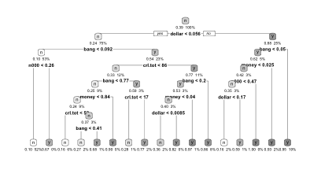
spam7b.rpart <- prune(spam7a.rpart, cp=cpval)
rpart.plot::rpart.plot(spam7b.rpart, under=TRUE, box.palette="Grays", tweak=1.65)How does the one standard error rule affect accuracy of estimates?
requireNamespace('randomForest', quietly=TRUE)
DAAG::compareTreecalcs(data=DAAG::spam7, fun="rpart") rpSEcvI rpcvI rpSEtest rptest nSErule nREmin
0.1396 0.1387 0.1269 0.1217 7.0000 8.0000 acctree.mat <- matrix(0, nrow=100, ncol=6)
spam7 <- DAAG::spam7
for(i in 1:100)
acctree.mat[i,] <- DAAG::compareTreecalcs(data=spam7, fun="rpart")How is the standard error calculated?
When are tree-based methods appropriate?
Section 8.4: From one tree to a forest – a more global optimality
suppressPackageStartupMessages(library(randomForest))
spam7.rf <- randomForest(yesno ~ ., data=spam7, importance=TRUE)
spam7.rf
Call:
randomForest(formula = yesno ~ ., data = spam7, importance = TRUE)
Type of random forest: classification
Number of trees: 500
No. of variables tried at each split: 2
OOB estimate of error rate: 11.56%
Confusion matrix:
n y class.error
n 2651 137 0.04914
y 395 1418 0.21787z <- tuneRF(x=spam7[, -7], y=spam7$yesno, plot=FALSE)mtry = 2 OOB error = 11.8%
Searching left ...
mtry = 1 OOB error = 12.67%
-0.07366 0.05
Searching right ...
mtry = 4 OOB error = 11.76%
0.003683 0.05 zdash <- t(z[,2,drop=F])
colnames(zdash) <- paste0(c("mtry=",rep("",2)), z[,1])
round(zdash,3) mtry=1 2 4
OOBError 0.127 0.118 0.118importance(spam7.rf) n y MeanDecreaseAccuracy MeanDecreaseGini
crl.tot 46.73 54.19 70.57 248.10
dollar 56.21 55.35 76.13 431.75
bang 91.66 100.46 115.95 588.53
money 33.09 51.87 53.49 206.51
n000 58.25 15.74 62.29 115.46
make 13.67 21.76 26.72 41.13Subsection 8.4.1: Prior probabilities
Pima.tr <- MASS::Pima.tr
table(Pima.tr$type)
No Yes
132 68 set.seed(41) # This seed should reproduce the result given here
Pima.rf <- randomForest(type ~ ., data=Pima.tr)
## The above is equivalent to:
## Pima.rf <- randomForest(type ~ ., data=Pima.tr, sampsize=200)
round(Pima.rf$confusion,3) No Yes class.error
No 110 22 0.167
Yes 32 36 0.471tab <- prop.table(table(Pima.tr$type))Pima.rf <- randomForest(type ~ ., data=Pima.tr, sampsize=c(68,68))Pima.rf <- randomForest(type ~ ., data=Pima.tr, sampsize=c(132,68))Subsection 8.4.2: A low-dimensional representation of observations
Subsection 8.4.3: Models with a complex error structure
Section 8.5: Additional notes – one tree, or many trees?
Subsection 8.5.1: Differences between rpart() and randomForest()
Error rates – rpart() versus randomForest()
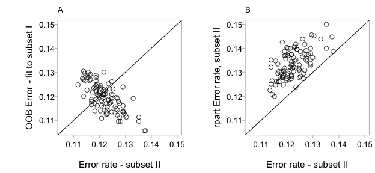
## Accuracy comparisons
acctree.mat <- matrix(0, nrow=100, ncol=8)
colnames(acctree.mat) <- c("rpSEcvI", "rpcvI", "rpSEtest", "rptest",
"n.SErule", "nre.min.12", "rfOOBI", "rftest")
for(i in 1:100)acctree.mat[i,] <- DAAG::compareTreecalcs(data=spam7, cp=0.0004,
fun=c("rpart", "randomForest"))
acctree.df <- data.frame(acctree.mat)
lims <- range(acctree.mat[, c(4,7,8)], na.rm=TRUE)
cthrublack <- adjustcolor("black", alpha.f=0.75)
# Panel A
plot(rfOOBI ~ rftest, data=acctree.df, xlab="Error rate - subset II", xlim=lims,
ylim=lims, ylab="OOB Error - fit to subset I", col=cthrublack, fg="gray")
abline(0,1)
mtext(side=3, line=0.5, "A", adj=0)
# Panel B
plot(rptest ~ rftest, data=acctree.df, xlab="Error rate - subset II",
ylab="rpart Error rate, subset II", xlim=lims, ylim=lims,
col=cthrublack, fg="gray")
abline(0,1)
mtext(side=3, line=0.5, "B", adj=0)acctree.mat <- matrix(0, nrow=100, ncol=8)
colnames(acctree.mat) <- c("rpSEcvI", "rpcvI", "rpSEtest", "rptest",
"n.SErule", "nre.min.12", "rfcvI", "rftest")
for(i in 1:100)acctree.mat[i,] <- DAAG::compareTreecalcs(data=spam7,
fun=c("rpart", "randomForest"))
## Panel A: Plot `rfOOBI` against `rftest`
## Panel B: Plot `rptest` against `rftest`Times required for computation
Subsection 8.5.2: Tree-based methods, versus other approaches
Tree-based methods may usefully complement other approaches
Subsection 8.5.3: Further notes
Pruning as variable selection
Section 8.6: Further reading and extensions
Exercises (8.7)
8.5
sapply(MASS::biopsy, function(x)sum(is.na(x))) ## Will omit rows with NAs ID V1 V2 V3 V4 V5 V6 V7 V8 V9 class
0 0 0 0 0 0 16 0 0 0 0 biops <- na.omit(MASS::biopsy)[,-1] ## Omit also column 1 (IDs)
## Examine list element names in randomForest object
names(randomForest(class ~ ., data=biops)) [1] "call" "type" "predicted"
[4] "err.rate" "confusion" "votes"
[7] "oob.times" "classes" "importance"
[10] "importanceSD" "localImportance" "proximity"
[13] "ntree" "mtry" "forest"
[16] "y" "test" "inbag"
[19] "terms" 8.5a
## Repeated runs, note variation in OOB accuracy.
for(i in 1:10) {
biops.rf <- randomForest(class ~ ., data=biops)
OOBerr <- mean(biops.rf$err.rate[,"OOB"])
print(paste(i, ": ", round(OOBerr, 4), sep=""))
print(round(biops.rf$confusion,4))
}[1] "1: 0.0288"
benign malignant class.error
benign 432 12 0.0270
malignant 7 232 0.0293
[1] "2: 0.0344"
benign malignant class.error
benign 431 13 0.0293
malignant 9 230 0.0377
[1] "3: 0.0308"
benign malignant class.error
benign 433 11 0.0248
malignant 9 230 0.0377
[1] "4: 0.0307"
benign malignant class.error
benign 431 13 0.0293
malignant 6 233 0.0251
[1] "5: 0.0311"
benign malignant class.error
benign 433 11 0.0248
malignant 8 231 0.0335
[1] "6: 0.0301"
benign malignant class.error
benign 431 13 0.0293
malignant 6 233 0.0251
[1] "7: 0.0312"
benign malignant class.error
benign 433 11 0.0248
malignant 7 232 0.0293
[1] "8: 0.0301"
benign malignant class.error
benign 433 11 0.0248
malignant 8 231 0.0335
[1] "9: 0.0285"
benign malignant class.error
benign 433 11 0.0248
malignant 6 233 0.0251
[1] "10: 0.0301"
benign malignant class.error
benign 432 12 0.0270
malignant 7 232 0.02938.5b
## Repeated train/test splits: OOB accuracy vs test set accuracy.
for(i in 1:10){
trRows <- sample(1:dim(biops)[1], size=round(dim(biops)[1]/2))
biops.rf <- randomForest(class ~ ., data=biops[trRows, ],
xtest=biops[-trRows,-10], ytest=biops[-trRows,10])
oobErr <- mean(biops.rf$err.rate[,"OOB"])
testErr <- mean(biops.rf$test$err.rate[,"Test"])
print(round(c(oobErr,testErr),4))
}[1] 0.0282 0.0340
[1] 0.0366 0.0327
[1] 0.0360 0.0226
[1] 0.0330 0.0311
[1] 0.0360 0.0384
[1] 0.0357 0.0353
[1] 0.0248 0.0399
[1] 0.0442 0.0270
[1] 0.0407 0.0268
[1] 0.0347 0.02428.5c
randomForest(class ~ ., data=biops, xtest=biops[,-10], ytest=biops[,10])
Call:
randomForest(formula = class ~ ., data = biops, xtest = biops[, -10], ytest = biops[, 10])
Type of random forest: classification
Number of trees: 500
No. of variables tried at each split: 3
OOB estimate of error rate: 2.93%
Confusion matrix:
benign malignant class.error
benign 433 11 0.02477
malignant 9 230 0.03766
Test set error rate: 0%
Confusion matrix:
benign malignant class.error
benign 444 0 0
malignant 0 239 08.7
## Run model on total data
randomForest(as.factor(type) ~ ., data=Pima.tr)
Call:
randomForest(formula = as.factor(type) ~ ., data = Pima.tr)
Type of random forest: classification
Number of trees: 500
No. of variables tried at each split: 2
OOB estimate of error rate: 28%
Confusion matrix:
No Yes class.error
No 109 23 0.1742
Yes 33 35 0.4853rowsamp <- sample(dim(Pima.tr)[1], replace=TRUE)
randomForest(as.factor(type) ~ ., data=Pima.tr[rowsamp, ])
Call:
randomForest(formula = as.factor(type) ~ ., data = Pima.tr[rowsamp, ])
Type of random forest: classification
Number of trees: 500
No. of variables tried at each split: 2
OOB estimate of error rate: 8.5%
Confusion matrix:
No Yes class.error
No 129 3 0.02273
Yes 14 54 0.205888.8a
d500 <- ggplot2::diamonds[sample(1:nrow(ggplot2::diamonds), 500),]
unlist(sapply(d500, class)) # Check the class of the 10 columns carat cut1 cut2 color1 color2 clarity1 clarity2
"numeric" "ordered" "factor" "ordered" "factor" "ordered" "factor"
depth table price x y z
"numeric" "numeric" "integer" "numeric" "numeric" "numeric" car::spm(d500) # If screen space is limited do two plots, thus:
# 1) variables 1 to 5 and 7 (`price`); 2) variables 6 to 10
plot(density(d500[, "price", drop = T])) # Distribution is highly skew
MASS::boxcox(price~., data=ggplot2::diamonds) # Suggests log transformation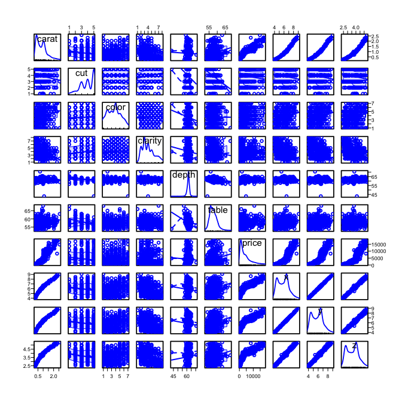
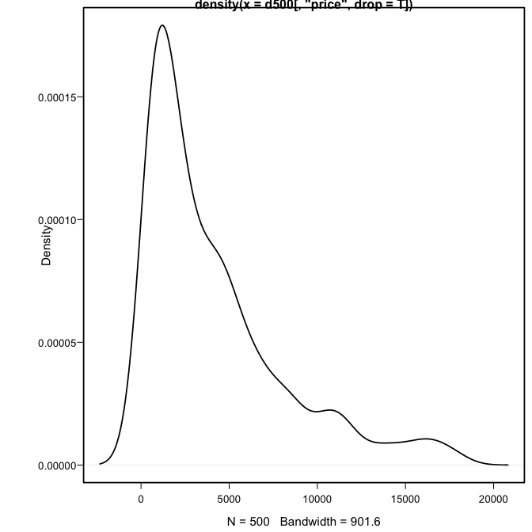
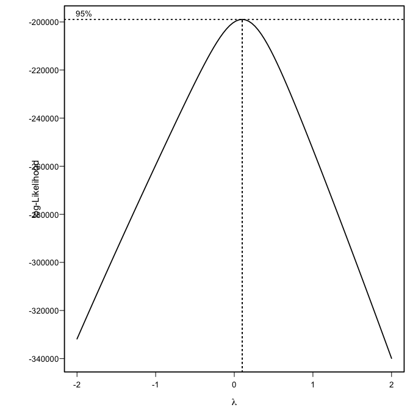
8.8b
diamonds <- ggplot2::diamonds; Y <- diamonds[,"price", drop=T]
library(rpart)
d7.rpart <- rpart(log(Y) ~ ., data=diamonds[,-7], cp=5e-7) # Complex tree
d.rpart <- prune(d7.rpart, cp=0.0025)
printcp(d.rpart) # Relative to `d7.rpart`, simpler and less accurate
Regression tree:
rpart(formula = log(Y) ~ ., data = diamonds[, -7], cp = 0.0000005)
Variables actually used in tree construction:
[1] carat clarity color x y
Root node error: 55531/53940 = 1
n= 53940
CP nsplit rel error xerror xstd
1 0.7244 0 1.000 1.000 0.00409
2 0.0885 1 0.276 0.276 0.00141
3 0.0661 2 0.187 0.188 0.00104
4 0.0290 3 0.121 0.121 0.00075
5 0.0105 4 0.092 0.092 0.00059
6 0.0072 5 0.082 0.082 0.00054
7 0.0071 6 0.074 0.072 0.00049
8 0.0030 7 0.067 0.068 0.00047
9 0.0026 8 0.064 0.065 0.00046
10 0.0026 9 0.062 0.061 0.00044
11 0.0025 10 0.059 0.059 0.00044nmin <- which.min(d7.rpart$cptable[,'xerror'])
dOpt.rpart <- prune(d7.rpart, cp=d7.rpart$cptable[nmin,'CP'])
print(dOpt.rpart$cptable[nmin])[1] 0.0000008743(xerror12 <- dOpt.rpart$cptable[c(nrow(d.rpart$cptable),nmin), "xerror"]) 11 1931
0.05934 0.01074 ## Subtract from 1.0 to obtain R-squared statisticsrbind("d.rpart"=d.rpart[['variable.importance']],
"dOpt.rpart"=dOpt.rpart[['variable.importance']]) |>
(\(x)100*apply(x,1,function(x)x/sum(x)))() |> round(1) |> t() y x carat z clarity table color depth cut
d.rpart 23.8 23.1 22.9 22.4 4.8 2.8 0.2 0.1 0.1
dOpt.rpart 23.5 22.9 22.7 22.2 5.2 2.7 0.5 0.2 0.18.9
Y <- ggplot2::diamonds[,"price", drop=T]
samp5K <- sample(1:nrow(diamonds), size=5000)
(diamond5K.rf <- randomForest(x=diamonds[samp5K,-7], y=log(Y[samp5K]),
xtest=diamonds[-samp5K,-7], ytest=log(Y[-samp5K])))
Call:
randomForest(x = diamonds[samp5K, -7], y = log(Y[samp5K]), xtest = diamonds[-samp5K, -7], ytest = log(Y[-samp5K]))
Type of random forest: regression
Number of trees: 500
No. of variables tried at each split: 3
Mean of squared residuals: 0.01434
% Var explained: 98.59
Test set MSE: 0.01
% Var explained: 98.65## Omit arguments `xtest` and `ytest` if calculations take too longsort(importance(diamond5K.rf)[,1], decreasing=T) |>
(\(x)100*x/sum(x))() |> round(1) |> t() y carat x z clarity color depth table cut
[1,] 33.5 23.6 21 17.2 2.6 1.2 0.4 0.3 0.28.9a
(diamond5KU.rf <- randomForest(x=diamonds[samp5K,-7], y=Y[samp5K],
xtest=diamonds[-samp5K,-7], ytest=Y[-samp5K]))
Call:
randomForest(x = diamonds[samp5K, -7], y = Y[samp5K], xtest = diamonds[-samp5K, -7], ytest = Y[-samp5K])
Type of random forest: regression
Number of trees: 500
No. of variables tried at each split: 3
Mean of squared residuals: 450742
% Var explained: 97.11
Test set MSE: 493916
% Var explained: 96.9if(file.exists("/Users/johnm1/pkgs/PGRcode/inst/doc/")){
code <- knitr::knit_code$get()
txt <- paste0("\n## ", names(code),"\n", sapply(code, paste, collapse='\n'))
writeLines(txt, con="/Users/johnm1/pkgs/PGRcode/inst/doc/ch8.R")
}